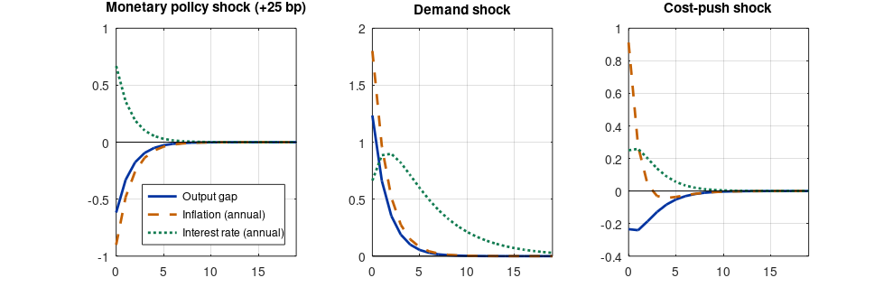

Step 1The question and the model
How does a monetary policy shock move output and inflation, and how should the central bank respond to shocks? The three-equation New Keynesian model is the workhorse for this question. It adds monopolistic competition and Calvo price setting to the household and firm problems of the RBC model, and replaces money with an interest-rate rule. Log-linearised around a zero-inflation steady state:
with \(\kappa = \frac{(1-\theta)(1-\beta\theta)}{\theta}(\sigma + \varphi)\). Here \(x_t\) is the output gap, \(\pi_t\) inflation, \(i_t\) the nominal rate, \(r^n_t\) the natural rate of interest (a demand shock), \(u_t\) a cost-push shock and \(v_t\) a monetary policy shock.
| Parameter | Value | Meaning |
|---|---|---|
| \(\beta\) | 0.99 | Discount factor |
| \(\sigma\) | 1 | Inverse intertemporal elasticity of substitution |
| \(\varphi\) | 1 | Inverse Frisch elasticity |
| \(\theta\) | 0.75 | Calvo probability of not resetting prices (average price duration of 4 quarters) |
| \(\phi_\pi\), \(\phi_x\) | 1.5, 0.125 | Taylor-rule responses to inflation and the output gap |
| \(\rho_i\) | 0.8 | Interest-rate smoothing |
Why the model is written in gaps and deviations
Every variable is a deviation from a zero-inflation steady state, so the steady state is zero and no steady_state_model is needed. The economics lies in the coefficients: \(\kappa\) summarises how strongly inflation reacts to the output gap, and it falls quickly as prices become stickier.
Step 2Write the model in Dynare
// Three-equation New Keynesian model. Inflation and interest rates are quarterly rates in percent;
// the reports below annualise them.
var x pi i rn u v;
varexo e_rn e_u e_v;
parameters beta sigma varphi theta kappa phi_pi phi_x rho_i rho_rn rho_u;
beta = 0.99; sigma = 1; varphi = 1; theta = 0.75;
kappa = (1 - theta) * (1 - beta*theta) / theta * (sigma + varphi);
phi_pi = 1.5; phi_x = 0.125; rho_i = 0.8;
rho_rn = 0.8; rho_u = 0.5;
model(linear);
x = x(+1) - (1/sigma) * (i - pi(+1) - rn); // dynamic IS curve
pi = beta * pi(+1) + kappa * x + u; // Phillips curve
i = rho_i * i(-1) + (1 - rho_i) * (phi_pi*pi + phi_x*x) + v; // Taylor rule
rn = rho_rn * rn(-1) + e_rn; // natural-rate (demand) shock
u = rho_u * u(-1) + e_u; // cost-push shock
v = e_v; // monetary policy shock
end;
shocks;
var e_rn; stderr 0.5;
var e_u; stderr 0.2;
var e_v; stderr 0.25;
end;
steady;
check;
stoch_simul(order=1, irf=20) x pi i;dynare nk
STEADY-STATE RESULTS:
x 0
pi 0
i 0
rn 0
u 0
v 0
EIGENVALUES:
Modulus Real Imaginary
0.5 0.5 0
0.5345 0.5345 0
0.8 0.8 0
1.101 1.101 0
1.373 1.373 0
There are 2 eigenvalue(s) larger than 1 in modulus for 2 forward-looking variable(s)
The rank condition is verified.
MODEL SUMMARY
Number of variables: 6
Number of stochastic shocks: 3
Number of state variables: 3
Number of jumpers: 2
Number of static variables: 1
MATRIX OF COVARIANCE OF EXOGENOUS SHOCKS
Variables e_rn e_u e_v
e_rn 0.250000 0.000000 0.000000
e_u 0.000000 0.040000 0.000000
e_v 0.000000 0.000000 0.062500
POLICY AND TRANSITION FUNCTIONS
x pi i
i(-1) -1.975490 -0.720289 0.534526
rn(-1) 1.975490 0.720289 0.265474
u(-1) -0.585845 0.570120 0.156390
e_rn 2.469363 0.900361 0.331842
e_u -1.171690 1.140240 0.312780
e_v -2.469363 -0.900361 0.668158
THEORETICAL MOMENTS
VARIABLE MEAN STD. DEV. VARIANCE
x 0.0000 1.6861 2.8430
pi 0.0000 0.6418 0.4119
i 0.0000 0.5646 0.3187
VARIANCE DECOMPOSITION (in percent)
e_rn e_u e_v
x 75.07 6.16 18.77
pi 68.89 13.89 17.22
i 83.78 3.96 12.26
MATRIX OF CORRELATIONS
Variables x pi i
x 1.0000 0.8349 0.3253
pi 0.8349 1.0000 0.4101
i 0.3253 0.4101 1.0000How to read it
model(linear)tells Dynare the equations are already linear, so it skips the linearisation.- The check. The model has two forward-looking variables (the output gap and inflation) and two eigenvalues outside the unit circle: the Blanchard–Kahn conditions hold, and the equilibrium is unique.
- Variance decomposition. In this calibration demand shocks dominate both the output gap (75%) and inflation (69%); cost-push shocks explain about 14% of inflation and monetary shocks under a fifth of each. With different shock variances these shares change: they are a property of the calibration, not a finding.
Step 3Impulse responses
shocks = {'e_v', 'e_rn', 'e_u'};
titles = {'Monetary policy shock (+25 bp)', 'Demand shock', 'Cost-push shock'};
f = figure('position', [0 0 900 290]);
for s = 1:3
subplot(1, 3, s);
plot(0:19, oo_.irfs.(['x_' shocks{s}])); hold on;
plot(0:19, 4 * oo_.irfs.(['pi_' shocks{s}]), '--');
plot(0:19, 4 * oo_.irfs.(['i_' shocks{s}]), ':');
plot([0 19], [0 0], 'k-', 'linewidth', 0.5); title(titles{s}); grid on; xlim([0 19]);
if s == 1, legend('Output gap', 'Inflation (annual)', 'Interest rate (annual)', 'location', 'southeast'); end
end
print(f, '-dpng', '-r110', 'irf.png');
fprintf('Monetary shock, impact: output gap %.2f%%, annual inflation %.2f pp, annual rate %.2f pp\n', ...
oo_.irfs.x_e_v(1), 4*oo_.irfs.pi_e_v(1), 4*oo_.irfs.i_e_v(1));Monetary shock, impact: output gap -0.62%, annual inflation -0.90 pp, annual rate 0.67 pp

How to read it
- Monetary policy shock. A surprise increase in the policy rate lowers the output gap and inflation on impact. Because inflation and the gap fall, the Taylor rule partly offsets the shock, so the interest rate rises by less than the shock itself.
- Demand shock. A rise in the natural rate raises the output gap and inflation together; the central bank raises the rate. Demand shocks move output and inflation in the same direction.
- Cost-push shock. Inflation rises while the output gap falls: the central bank faces a trade-off, the reason inflation targeting is hard in practice.
Step 4Comparing policy rules
par = @(n) find(strcmp(cellstr(M_.param_names), n));
rules = [1.5 0.125; 3.0 0.125; 1.5 0.5];
fprintf('%-26s %10s %10s %10s\n', 'Rule (phi_pi, phi_x)', 'sd(x)', 'sd(pi) ann', 'sd(i) ann');
options_.noprint = 1; options_.nograph = 1;
for k = 1:size(rules, 1)
M_.params(par('phi_pi')) = rules(k, 1); M_.params(par('phi_x')) = rules(k, 2);
[info, oo_, options_] = stoch_simul(M_, options_, oo_, {'x', 'pi', 'i'});
sd = sqrt(diag(oo_.var));
fprintf('%-26s %10.3f %10.3f %10.3f\n', sprintf('(%.2f, %.3f)', rules(k, :)), sd(1), 4*sd(2), 4*sd(3));
end
M_.params(par('phi_pi')) = 1.5; M_.params(par('phi_x')) = 0.125;Rule (phi_pi, phi_x) sd(x) sd(pi) ann sd(i) ann (1.50, 0.125) 1.686 2.567 2.258 (3.00, 0.125) 1.256 1.655 2.448 (1.50, 0.500) 1.240 2.028 2.374
How to read it
Doubling the response to inflation lowers the volatility of both inflation and the output gap. That is because demand shocks dominate in this calibration, and for demand shocks there is no trade-off: stabilising inflation also stabilises the gap (the “divine coincidence”). A stronger response to the output gap also lowers both, by less for inflation. The policy rate becomes more volatile in both cases. A trade-off appears only through cost-push shocks; with larger cost-push shocks, the ranking of rules depends on how society weighs the two goals, which is the subject of the optimal-policy guide.
Step 5Determinacy: the Taylor principle
var x pi i rn u v;
varexo e_rn e_u e_v;
parameters beta sigma varphi theta kappa phi_pi phi_x rho_i rho_rn rho_u;
beta = 0.99; sigma = 1; varphi = 1; theta = 0.75;
kappa = (1 - theta) * (1 - beta*theta) / theta * (sigma + varphi);
phi_pi = 0.9; phi_x = 0.125; rho_i = 0.8; rho_rn = 0.8; rho_u = 0.5; // passive policy: phi_pi < 1
model(linear);
x = x(+1) - (1/sigma) * (i - pi(+1) - rn);
pi = beta * pi(+1) + kappa * x + u;
i = rho_i * i(-1) + (1 - rho_i) * (phi_pi*pi + phi_x*x) + v;
rn = rho_rn * rn(-1) + e_rn; u = rho_u * u(-1) + e_u; v = e_v;
end;
steady;
check;try
dynare nk_passive noclearall nograph nolog
catch err
disp('Dynare stopped with the message:'); disp(err.message);
endSTEADY-STATE RESULTS:
x 0
pi 0
i 0
rn 0
u 0
v 0
EIGENVALUES:
Modulus Real Imaginary
0.5 0.5 0
0.5612 0.5612 0
0.8 0.8 0
0.9842 0.9842 0
1.463 1.463 0
There are 1 eigenvalue(s) larger than 1 in modulus for 2 forward-looking variable(s)
The rank condition ISN'T verified!How to read it
Dynare reports one eigenvalue outside the unit circle for two forward-looking variables: “The rank condition ISN'T verified!”. With \(\phi_\pi = 0.9\), the central bank raises the nominal rate by less than one-for-one with inflation, so the real rate falls when inflation rises. Self-fulfilling expectations of inflation are then possible, and the model has many equilibria (it is indeterminate). This is the Taylor principle: the response to inflation must exceed one (with a small output-gap response, roughly \(\phi_\pi > 1\)). When you see this Blanchard–Kahn error in your own model, check the policy rule before anything else.
Step 6Write the paper
How to write it: results
Figure 1 shows the responses to monetary, demand and cost-push shocks in the calibrated model. A 25-basis-point monetary tightening lowers the output gap and annualised inflation on impact, and its effects dissipate within a few quarters. Demand shocks move output and inflation in the same direction, while cost-push shocks create a trade-off between stabilising inflation and stabilising the output gap. The model is determinate under the baseline rule; with a response to inflation below one, the equilibrium is indeterminate, as implied by the Taylor principle.
Common mistakes
- Mixing quarterly and annual rates. Write the model in quarterly rates and annualise only when reporting.
- Reporting impulse responses from an indeterminate model. Dynare refuses to solve it; do not “fix” this by changing timing until it runs.
- Treating the variance decomposition of a calibrated model as evidence. It reflects the assumed shock variances.
- Forgetting interest-rate smoothing, which makes the response of the policy rate gradual, as in the data.